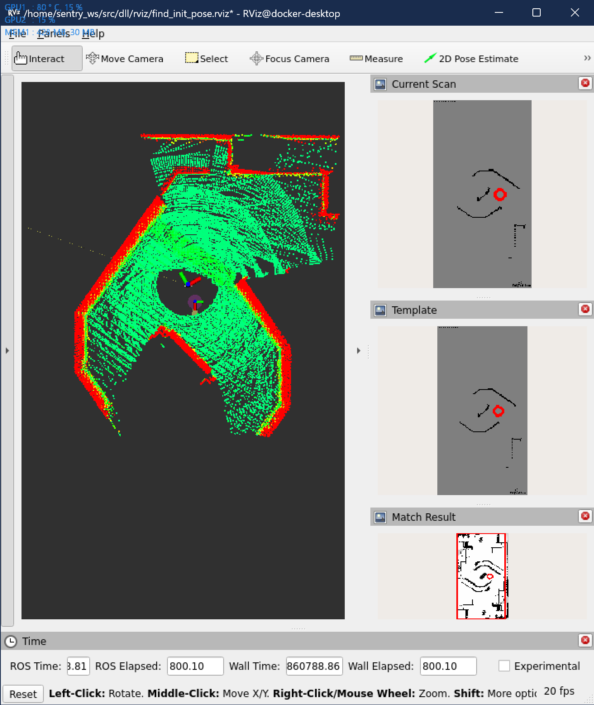
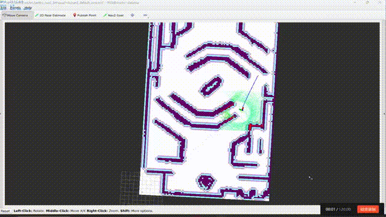
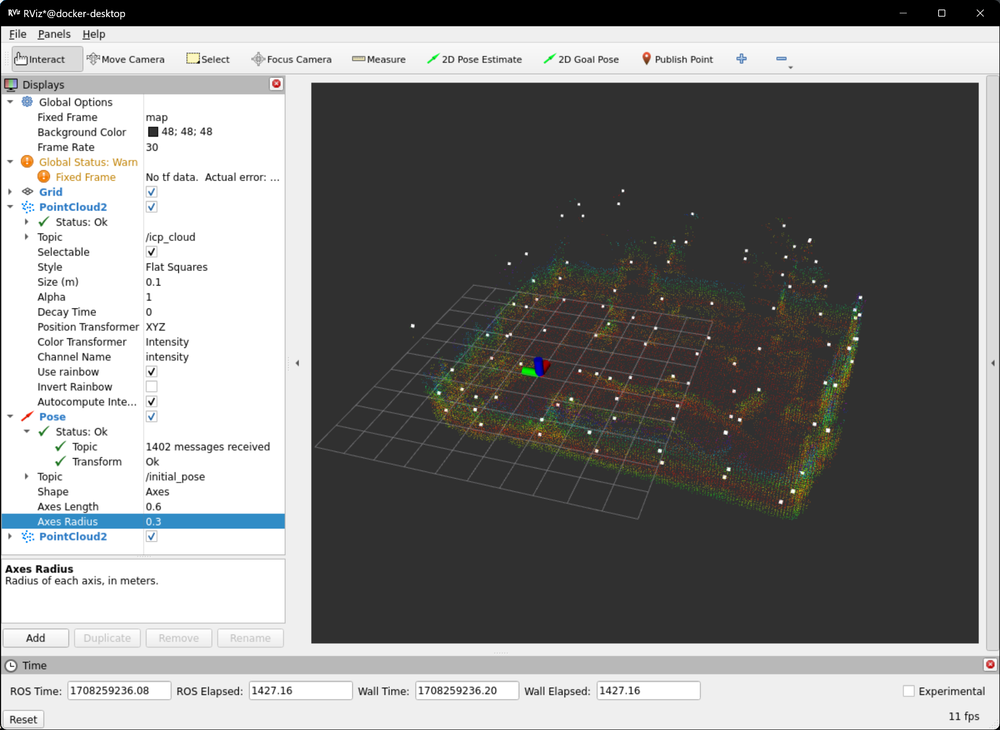

开发记录 2024.01.01-now¶
框架融合¶
重定位小工具¶
搞个重定位的小工具试试
不太好用，暂时弃了hhh
总结一下最近的进度2024.01.12¶
定位部分¶
Point_lio比Fast_lio稳很多，占用率也是OK的，所以就用Point_lio了。虽然偶尔还是会飘，只要导航不要醉酒式开车基本上不会出问题。
Point_lio又有了最新的更新，也一并做了迁移，但是还没发现效果好在哪
Point_lio推荐了使用Li_init进行激光雷达和imu的标定，使用之前可以标定一下
重定位部分¶
DLL和Point_lio一起使用貌似有一点问题，不知道是不是Point_lio发布消息的速率太高了，原本用于Fast_lio的参数不适用了。还需要再调参试试看。
还找了另外一个类似于DLL的点云配准算法，mcl3d，和DLL优化的对象相同但是方法不一样，用的是高斯牛顿，效果等待测试。
2024.02.02 mcl3d的效果不太好，DLL在高速的情况下也不太稳，兜兜转转还得是ICP。ICP占用率太高的话可以检查一下建八叉树地图的时候的分辨率，这次只是把分辨率从0.1调到了0.15，运行就顺畅了很多。（可以同时运行两个Octomap_server，一个低分辨率用于建八叉树地图，给重定位用；一个高分辨率用于建投影2D地图，给导航用）
导航部分¶
global planner¶
Nav2默认的算法感觉够用了，不是说算法有多高级，但是工程化和优化做得真不错。
local planner¶
local_planner其实还是会有一些jitter的问题，跑起来很不优雅，对定位也不友好。再加上如果要和Nav2框架融合还没做，所以先暂缓把。
MPPI Controller路径很平滑，20hz的规划频率算力也跟得上，打算先用这个了。
而且Nav2的避障很精细啊，总结来说比我开得好多了
决策部分¶
决策稍微改了一下来适应Navigation2的框架，Nav2的框架真的太成熟了，很多东西都不用自己写了，直接用就可以
跟BehaviorTree.CPP申请到了一年的Pro版本使用权
复杂地形¶
terrain analysis¶
写了两个Nav2 Costmap 2D Plugin把terrain analysis接入了Nav2。
下楼梯¶
主要是3个问题：
楼梯的辨识
对准的问题
单向通行：只能下楼梯不能上楼梯，地图需要防止逆向的路径生成。写了一个Nav2 Costmap 2D的Dynamic Layer，和Binary Layer结合起来可以实现动态地堵上某些通道。
上坡和下楼梯的时候需要临时加速。这个部分通过修改Nav2的velocity_smoother实现。将速度需要放大的倍率通过话题发布即可。
路径法线分析对稠密的点云效果比较好，虽然可以在线运行（也就是用SLAM实时发出的点云），但是效果不太好，容易算错角度。所以还是用离线的点云地图来做这个部分。
还需要解决的问题¶
📅2024.02.02 小陀螺和云台旋转的问题¶
什么时候要开启小陀螺？小陀螺开起来以后，云台的朝向就是前向，那么就是说走路的时候云台不能转？
获取云台角度的方式？话题还是tf?
所有的角度都是相对于一个固定的baselink坐标系的？如何旋转这个固定的baselink坐标系？
上坡和下楼梯的时候需要把小陀螺关掉
小陀螺由决策部分控制
tf从自瞄小电脑上获取
因为底盘的角度是可控而不可知的，所以虚拟一个chassis_link坐标系用于执行旋转，所有导航发出的命令都是相对于chassis_link坐标系的。此外，让电控还是用随动模式（也就是速度相对于云台）来控制底盘的角度，将相对于chassis_link的速度转换到yaw_link下再发出（因为我也说不清楚应该怎么让电控解算，所以就自己解算到云台吧）
因为电控代码会让小陀螺停下时底盘归回0度，所以调整底盘的角度还是可以实现的
接入自瞄¶
注意以下几个问题：
自瞄消息的类型，Publisher和Subscriber要用同样的Qos，否则收不到消息。注意看termial的报错
自瞄最好能改一下消息发送的方式，/tracker/target最好是可以一直发送，没有目标的时候将tracking设置为false，有目标的时候将tracking设置为true。这样可以避免决策上的一些问题
导航自瞄共同运行的效果


{kind=link}
{kind=link}
{kind=link}
{kind=link}
{kind=link}
{kind=link}
{kind=link}
雷达全向感知¶
2024.02.07 稍微探索了一下，感觉还是有点难度。可以考虑实现。
2024.02.15 发现了做雷达全向感知的方法，在数据集上测试了，感觉可以
2024.02.22 寄 mid360上效果不好
写文档和教程¶
📅2024.02.05-06 launch文件说明、包说明
📅2024.02.07 更新中期的赛季规划
📅2024.02.09 行为树设计思想、教程
2024.02.09-02.11 优化和重构代码¶
尽量换成进程内通信，在一些部分用上zero-copy，装进containter里运行，这一步还是在所有算法和调参都完成后再做，因为装进containner里以后不好分开调试
写教程文档
想用server-client的方式重构决策的代码，但是感觉有点复杂且没必要🙃
各种试验和探索¶
2024.02.04-06 试验了一下Cartographer Pure Localization，回学校以后在实车上测试一下效果如何
2024.02.14 还打算试一下基于NDT的定位和重定位算法 https://github.com/rsasaki0109/lidar_localization_ros2/tree/humble https://github.com/rsasaki0109/lidarslam_ros2
2024.02.17 又打算试一下SCA-IA之类的点云配准重定位方法
2024.02.18 SCA-IA+gicp 甚至不需要提供初始位姿啊惊了，也不用IMU，就是说不受高速运动的影响啊，但是点云信息不足的时候是不是会寄掉🤔稍后了解下原理 
{kind=link}
2024.02.16-17 研究了一下其他学校的哨兵方案和技术报告，汇总一下然后写个文档把
2024.02.18 学了一下ROS的executor,callback group和Qos，写了文档
2024.02.18 foxglove真香，这不rviz嘎嘎顺滑 2024.02.23 foxglove延迟好大 :(